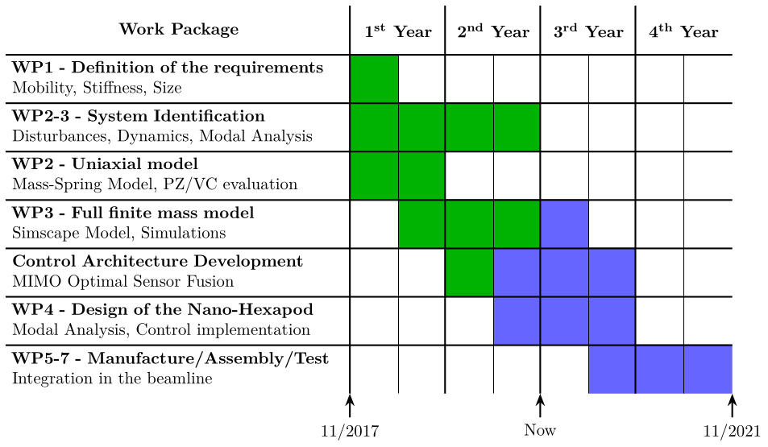
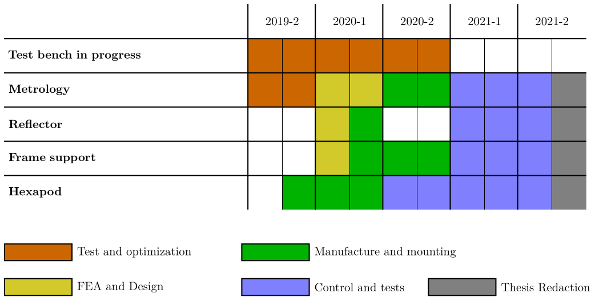

NASS - Nano Active Stabilization System
Table of Contents
1 Schedule of the thesis - 06-2019
\begin{tikzpicture} \tikzstyle{table} = [ label skeleton, matrix of nodes, column sep=0pt, row sep=0pt, nodes in empty cells, nodes={ align=left, fill=white, minimum height=1cm, minimum width=2cm, anchor=south }, column 1/.style={ text width=7cm } ] \tikzstyle{done} = [fill = green!70!black] \tikzstyle{sche} = [fill = blue!60!white] \matrix (m) [table] { & & & & \\ {\textbf{Definition of the requirements}\\Mobility, Stiffness} & & & & \\ {\textbf{System Identification}\\Disturbances, Noise, Dynamics} & & & & \\ {\textbf{Uniaxial model}\\Mass-Spring Model, PZ/VC evaluation} & & & & \\ {\textbf{Full finite mass model}\\Simscape Model, Simulations} & & & & \\ {\textbf{Control Architecture Development}\\MIMO Optimal (virtual) Sensor Fusion} & & & & \\ {\textbf{Design of the Nano-Hexapod}\\Modal Analysis, Control implementation} & & & & \\ {\textbf{Manufacture/Assembly/Test}\\Integration in the beamline} & & & & \\ }; % Done \path[done] (m-2-2.north west) rectangle (m-2-2.south); \path[done] (m-3-2.north west) rectangle (m-3-3.south); \path[sche] (m-3-3.north) rectangle (m-3-4.south west); \path[done] (m-4-2.north west) rectangle (m-4-3.south west); \path[done] (m-5-2.north) rectangle (m-5-3.south); \path[sche] (m-5-3.north) rectangle (m-5-4.south); \path[done] (m-6-3.north west) rectangle (m-6-3.south); \path[sche] (m-6-3.north) rectangle (m-6-5.south west); \path[sche] (m-7-3.north) rectangle (m-7-5.south west); \path[sche] (m-8-4.north) rectangle (m-8-5.south east); % Years \node[] at (m-1-1) {\textbf{Work Package}}; \node[] at (m-1-2) {\textbf{1\textsuperscript{st} Year}}; \node[] at (m-1-3) {\textbf{2\textsuperscript{nd} Year}}; \node[] at (m-1-4) {\textbf{3\textsuperscript{rd} Year}}; \node[] at (m-1-5) {\textbf{4\textsuperscript{th} Year}}; % Vertical Lines \draw[] (m-1-2.north west) -- (m-8-2.south west); \draw[] (m-1-3.north west) -- (m-8-3.south west); \draw[] (m-1-4.north west) -- (m-8-4.south west); \draw[] (m-1-5.north west) -- (m-8-5.south west); \draw[thin] (m-2-2.north) -- (m-8-2.south); \draw[thin] (m-2-3.north) -- (m-8-3.south); \draw[thin] (m-2-4.north) -- (m-8-4.south); \draw[thin] (m-2-5.north) -- (m-8-5.south); % Horizontal Lines \draw[] (m-1-1.south west) -- (m-1-5.south east); \draw[] (m-2-1.south west) -- (m-2-5.south east); \draw[] (m-3-1.south west) -- (m-3-5.south east); \draw[] (m-4-1.south west) -- (m-4-5.south east); \draw[] (m-5-1.south west) -- (m-5-5.south east); \draw[] (m-6-1.south west) -- (m-6-5.south east); \draw[] (m-7-1.south west) -- (m-7-5.south east); % Vertical year indicating the current time \draw[dashed, color=black!60!white, thick] ($(m-2-2.north)+(0.2, 0)$) -- ($(m-8-2.south)+(0.2, 0)$); \draw[<-] ($(m-8-2.south)+(0.2, 0)$) -- ++(0, -0.5) node[below]{1\textsuperscript{st} meeting}; \draw[dashed, thick] ($(m-2-3.north)+(0.2, 0)$) -- ($(m-8-3.south)+(0.2, 0)$); \draw[<-] ($(m-8-3.south)+(0.2, 0)$) -- ++(0, -0.5) node[below]{Now}; \draw[<-] (m-8-5.south east) -- ++(0, -0.5) node[below]{11/2021}; \end{tikzpicture}

2 Schedule of the thesis - 10/2019
\begin{tikzpicture} \tikzstyle{table} = [ label skeleton, matrix of nodes, column sep=0pt, row sep=0pt, nodes in empty cells, nodes={ align=left, fill=white, minimum height=1cm, minimum width=2cm, anchor=south }, column 1/.style={ text width=7cm } ] \tikzstyle{done} = [fill = green!70!black] \tikzstyle{sche} = [fill = blue!60!white] \matrix (m) [table] { {} & & & & \\ {\textbf{WP1 - Definition of the requirements}\\Mobility, Stiffness, Size} & & & & \\ {\textbf{WP2-3 - System Identification}\\Disturbances, Dynamics, Modal Analysis} & & & & \\ {\textbf{WP2 - Uniaxial model}\\Mass-Spring Model, PZ/VC evaluation} & & & & \\ {\textbf{WP3 - Full finite mass model}\\Simscape Model, Simulations} & & & & \\ {\textbf{Control Architecture Development}\\MIMO Optimal Sensor Fusion} & & & & \\ {\textbf{WP4 - Design of the Nano-Hexapod}\\Modal Analysis, Control implementation} & & & & \\ {\textbf{WP5-7 - Manufacture/Assembly/Test}\\Integration in the beamline} & & & & \\ }; % Done \path[done] (m-2-2.north west) rectangle (m-2-2.south); \path[done] (m-3-2.north west) rectangle (m-3-4.south west); \path[done] (m-4-2.north west) rectangle (m-4-3.south west); \path[done] (m-5-2.north) rectangle (m-5-4.south west); \path[sche] (m-5-4.north west) rectangle (m-5-4.south); \path[done] (m-6-3.north west) rectangle (m-6-3.south); \path[sche] (m-6-3.north) rectangle (m-6-5.south west); \path[sche] (m-7-3.north) rectangle (m-7-5.south west); \path[sche] (m-8-4.north) rectangle (m-8-5.south east); % Years \node[] at (m-1-1) {\textbf{Work Package}}; \node[] at (m-1-2) {\textbf{1\textsuperscript{st} Year}}; \node[] at (m-1-3) {\textbf{2\textsuperscript{nd} Year}}; \node[] at (m-1-4) {\textbf{3\textsuperscript{rd} Year}}; \node[] at (m-1-5) {\textbf{4\textsuperscript{th} Year}}; % Vertical Lines \draw[] (m-1-2.north west) -- (m-8-2.south west); \draw[] (m-1-3.north west) -- (m-8-3.south west); \draw[] (m-1-4.north west) -- (m-8-4.south west); \draw[] (m-1-5.north west) -- (m-8-5.south west); \draw[thin] (m-2-2.north) -- (m-8-2.south); \draw[thin] (m-2-3.north) -- (m-8-3.south); \draw[thin] (m-2-4.north) -- (m-8-4.south); \draw[thin] (m-2-5.north) -- (m-8-5.south); % Horizontal Lines \draw[] (m-1-1.south west) -- (m-1-5.south east); \draw[] (m-2-1.south west) -- (m-2-5.south east); \draw[] (m-3-1.south west) -- (m-3-5.south east); \draw[] (m-4-1.south west) -- (m-4-5.south east); \draw[] (m-5-1.south west) -- (m-5-5.south east); \draw[] (m-6-1.south west) -- (m-6-5.south east); \draw[] (m-7-1.south west) -- (m-7-5.south east); % Vertical year indicating the current time \draw[<-] (m-8-2.south west) -- ++(0, -0.5) node[below]{11/2017}; \draw[<-] (m-8-4.south west) -- ++(0, -0.5) node[below]{Now}; \draw[<-] (m-8-5.south east) -- ++(0, -0.5) node[below]{11/2021}; \end{tikzpicture}

3 Schedule of the thesis - Metrology
\begin{tikzpicture} \tikzstyle{table} = [ label skeleton, matrix of nodes, column sep=0pt, row sep=0pt, nodes in empty cells, nodes={ align=left, fill=white, minimum height=1cm, minimum width=2cm, anchor=south }, column 1/.style={ text width=7cm } ] \tikzstyle{test} = [fill = orange!80!black] \tikzstyle{dsig} = [fill = yellow!80!black] \tikzstyle{manu} = [fill = green!70!black] \tikzstyle{ctrl} = [fill = blue!50!white] \tikzstyle{thes} = [fill = black!50!white] \matrix (m) [table] { {} & & & & & \\ {\textbf{Test bench in progress}\\} & & & & & \\ {\textbf{Metrology}\\} & & & & & \\ {\textbf{Reflector}\\} & & & & & \\ {\textbf{Frame support}\\} & & & & & \\ {\textbf{Hexapod}\\} & & & & & \\ }; % Done \path[test] (m-2-2.north west) rectangle (m-2-5.south west); \path[test] (m-3-2.north west) rectangle (m-3-3.south west); \path[dsig] (m-3-3.north west) rectangle (m-3-4.south west); \path[manu] (m-3-4.north west) rectangle (m-3-5.south west); \path[ctrl] (m-3-5.north west) rectangle (m-3-6.south); \path[thes] (m-3-6.north) rectangle (m-3-6.south east); \path[dsig] (m-4-3.north west) rectangle (m-4-3.south); \path[manu] (m-4-3.north) rectangle (m-4-4.south west); \path[ctrl] (m-4-5.north west) rectangle (m-4-6.south); \path[thes] (m-4-6.north) rectangle (m-4-6.south east); \path[dsig] (m-5-3.north west) rectangle (m-5-3.south); \path[manu] (m-5-3.north) rectangle (m-5-5.south west); \path[ctrl] (m-5-5.north west) rectangle (m-5-6.south); \path[thes] (m-5-6.north) rectangle (m-5-6.south east); \path[manu] (m-6-2.north) rectangle (m-6-4.south west); \path[ctrl] (m-6-4.north west) rectangle (m-6-6.south); \path[thes] (m-6-6.north) rectangle (m-6-6.south east); % Years \node[] at (m-1-2) {2019-2}; \node[] at (m-1-3) {2020-1}; \node[] at (m-1-4) {2020-2}; \node[] at (m-1-5) {2021-1}; \node[] at (m-1-6) {2021-2}; % Vertical Lines \draw[] (m-1-2.north west) -- (m-6-2.south west); \draw[] (m-1-3.north west) -- (m-6-3.south west); \draw[] (m-1-4.north west) -- (m-6-4.south west); \draw[] (m-1-5.north west) -- (m-6-5.south west); \draw[] (m-1-6.north west) -- (m-6-6.south west); \draw[thin] (m-2-2.north) -- (m-6-2.south); \draw[thin] (m-2-3.north) -- (m-6-3.south); \draw[thin] (m-2-4.north) -- (m-6-4.south); \draw[thin] (m-2-5.north) -- (m-6-5.south); \draw[thin] (m-2-6.north) -- (m-6-6.south); % Horizontal Lines \draw[] (m-1-1.south west) -- (m-1-6.south east); \draw[] (m-2-1.south west) -- (m-2-6.south east); \draw[] (m-3-1.south west) -- (m-3-6.south east); \draw[] (m-4-1.south west) -- (m-4-6.south east); \draw[] (m-5-1.south west) -- (m-5-6.south east); \node[test, draw, label=right:Test and optimization, minimum height=0.5cm, minimum width=2cm, anchor=north west] (test) at ($(m-6-1.south west) + (0, -1)$) {}; \node[dsig, draw, label=right:FEA and Design, minimum height=0.5cm, minimum width=2cm, below=0.5 of test] (dsig) {}; \node[manu, draw, label=right:Manufacture and mounting, minimum height=0.5cm, minimum width=2cm, right=5 of test] (manu) {}; \node[ctrl, draw, label=right:Control and tests, minimum height=0.5cm, minimum width=2cm, below=0.5 of manu] (ctrl) {}; \node[thes, draw, label=right:Thesis Redaction, minimum height=0.5cm, minimum width=2cm, right=3.5 of ctrl] {}; \end{tikzpicture}
